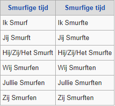
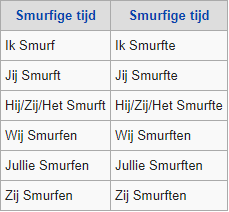

Algemene Informatie
Op deze pagina vind je algemene informatie over smurfen.
Wat zijn smurfen?
Smurfen zijn de zeer geliefde blauwe wezentjes die in paddenstoelen leven. Smurfen zijn stripfiguren bedacht door Peyo. Oorspronkelijk had Peyo de smurfen gemaakt als nevenpersonages in de stripreeks Johan en Pirrewiet, ook gemaakt door Peyo. Sinds 1959 kregen de Smurfen hun eigen stripreeks en werden ze steeds beroemder. De smurfen kregen later ook hun eigen tekenfilmserie en twee liveactionfilms. Ook kregen de smurfen hun eigen franchise met merchandising.
Serie (strip)
In 1959 kregen de smurfen hun eerste verhaal, De Zwarte Smurfen. In Nederland verscheen De Zwarte Smurfen pas vanaf 1968. De eerste zes verhalen worden 'microverhalen' genoemd, omdat het uit 48 pagina's bestond met 8 pagina's op 1 A4-tje. Vanaf 1963 werden de Smurfen op 'normaal' formaat gemaakt. En de eeste zes verhalen werden opnieuw gemaakt op 'normaal' formaat.
Serie & Films
Van 1981 tot 1990 liep de eerste tekenfilmreeks geproduceerd door Hanna-Barbera. De serie werd uitgezonden op de televisie en de Smurfen kregen er werledwijde bekendheid door. In 2011 verscheen The Smurfs en in 2013 verscheen The Smurfs 2, dit zijn de liveactionfilms en de regisseur van beide films is Raja Gosnell. In 2017 verscheen de volledig digitaal geanimeerde film Smurfs: The Lost Village, Kelly Asbury regisseerde de film.
Taal
Smurfentaal is de fictieve taal van de Smurfen, een kaboutervolk van striptekenaar Peyo. Eind jaren vijftig dineerde deze met zijn collega Franquin, en ietwat beschonken kon deze niet op het woord 'zoutvat' komen, zodat hij mompelde: Passe le schtroumpf! (Geef de smurf eens door!). Dit woordspelletje werd de hele avond doorgespeeld, waaruit het Smurfs is gegroeid. De Smurfentaal kenmerkt zich door het gebruik van het werkwoord "smurfen" in allerlei betekenissen, en het vervangen van (delen van) zelfstandige naamwoorden door smurf. Daarbij wordt de lezer geacht te begrijpen wat er wordt bedoeld aan de hand van de context. In 't Smurfenlied werd dit handig opgepakt. Op de vraag van Vader Abraham aan de Smurfen wat hun grootste wens is, werd in koor geantwoord met: "Smurfen", maar dat snapt geen mens. In het verhaal De valse Smurf betovert aartsvijand Gargamel zichzelf in een Smurf om zo in het Smurfendorp te kunnen uitgenodigd worden, de enige manier om het dorp te vinden. Hijzelf begrijpt de Smurfentaal niet. Daarom ook sprak de door hem tot leven gewekte Smurfin aanvankelijk ook geen "Smurfs" maar gewone mensentaal. Als de Smurfen de vermomde Gargamel hun Smurfentaal proberen aan te leren begrijpt hij het nog steeds niet. Zo vertaalt hij ik eet een appel in Ik smurf een smurf. De Smurfen verstaan dit echter als: ik folinkel een granukel. De grammatica blijkt blijkbaar subtiele diepere regels te bevatten dan op het eerste vlak waarneembaar. In het album Smurfe koppen en koppige Smurfen voert tekenaar Peyo de taalwaanzin ten top door het Smurfendorp te splitsen in een noordkamp en een zuidkamp, als kritiek op de taalstrijd in België. Zo spreekt een Smurf in het noordkamp van een 'smurfentrekker' terwijl een smurf in het zuidkamp eerder over een 'kurkensmurfer' zou spreken. Doorheen het album escaleert dit geruzie over de exacte smurfengrammatica tot een echte oorlog, waar Grote Smurf uiteindelijk de verschijning van Gargamel in het paniekerige Smurfendorp moet veroorzaken, om de onderlinge Smurfentwisten opzij te zetten tegenover de gemeenschappelijke vijand. Smurfentaal wordt ook gebruikt als licht denigrerende aanduiding van de hedendaagse straattaal, een door jongeren van verschillende etnische groepen gesproken mengtaal, en als spellingshulpmiddel: de smurfenregel.
 
